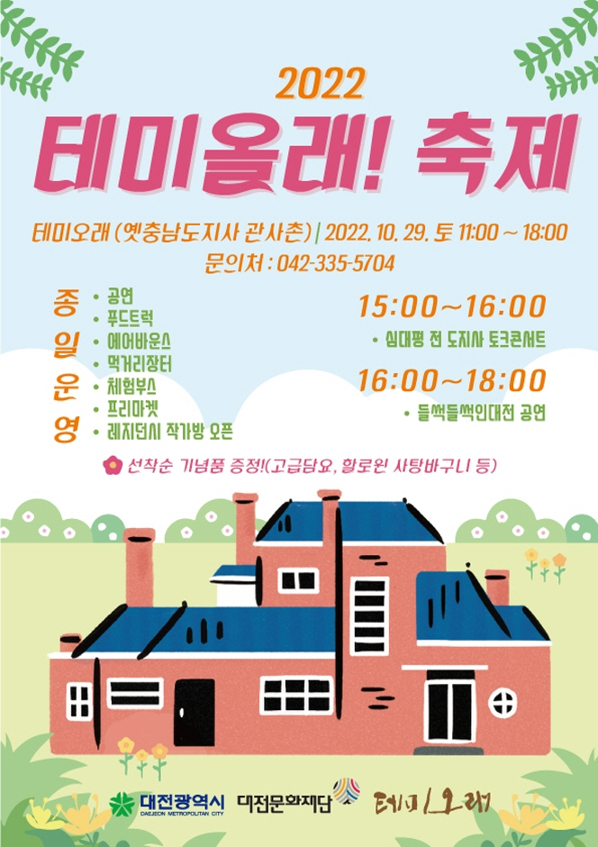

💥행사 참석 시 항상 안전 사고에 유의하여 주시기 바라며, 안전하게 행사에 참여해 주시기 바랍니다. 행사를 준비,운영하는 기관도 안전사고 예방을 위한 조치 당부 드립니다💥
-
'일두백미', 100가지 맛이 존재하는 한우고기 우리 조상들은 한우 한 마리에서 100가지 맛이 나온다고 하여 한우를 '일두백미'라 하였다. '비싼가격, 소비위축'으로 인한 충청지역 축산농가의 어려움 해소 한우는 뛰어난 맛과 좋은 효능에도 다른 고기에 비해 비싼 가격으로 인하여 한우 소비를 망설이는 소비자와, 한우 소비가 줄어 힘든 충청지역 축산농가가 모두 만족할 수 있는 한우 소비방안에 대한 고민을 하였고, 한우의 차별된 우수성을 인지하고 부위별 특성, 용도를 고려하여 보다 다양하고 건강한 한우의 맛을 즐기기 위해 2022 한우대전 한우숯불구이 축제가 탄생하였다.
소개
-
'개회식 - 대전하나시티즌 치어리더단 공연' '지역 별 한우 판매' 건강하고 수준 높은 충청도 한우의 우수성을 알리고, 축제를 방문하는 이에게 충청도 한우 브랜드 이미지를 고착시키고 신뢰를 쌓는 공간을 제공한다. '지역 별 특산품 홍보' '가족과 함께하는 한우요리경연대회' '우리동네 장기자랑 & 노래자랑' '플리마켓', '놀이체험부스'
행사내용


-
레트로와 할로윈의 콜라보 축제! 테미올래축제가 10월 29일 토요일에 개최된다. 역사와 문화가 살아 숨쉬는 테미오래에서 할로윈 기간을 맞이해 가족들과 연인이 특별한 추억을 만들 수 있는 이색적인 축제를 준비했다. 남녀노소 즐기실 수 있는 다양한 프로그램과 최신트렌드를 반영한 볼거리, 먹거리, 즐길거리가 많은 축제이니 가을 마지막 주 토요일 오셔서 즐겨주시길 바란다.
소개
-
할로윈 코스튬한 사진사들의 무료 폴라로이드 사진 촬영을 진행한다. 선착순으로 500장 진행하니 놓치지말고 꼭 이용하셔서 특별한 추억 가져가시길 바란다. 이 외에 푸드트럭, 대형 에어바운스, 공연, 체험부스, 프리마켓, 먹거리장터까지 함께 진행한다. 제공해드리는 사탕바구니를 들고 할로윈으로 물든 관사촌을 누려보시길 바란다.